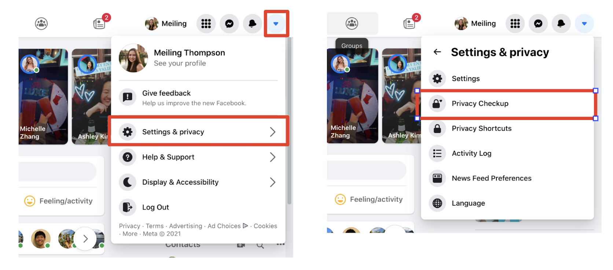
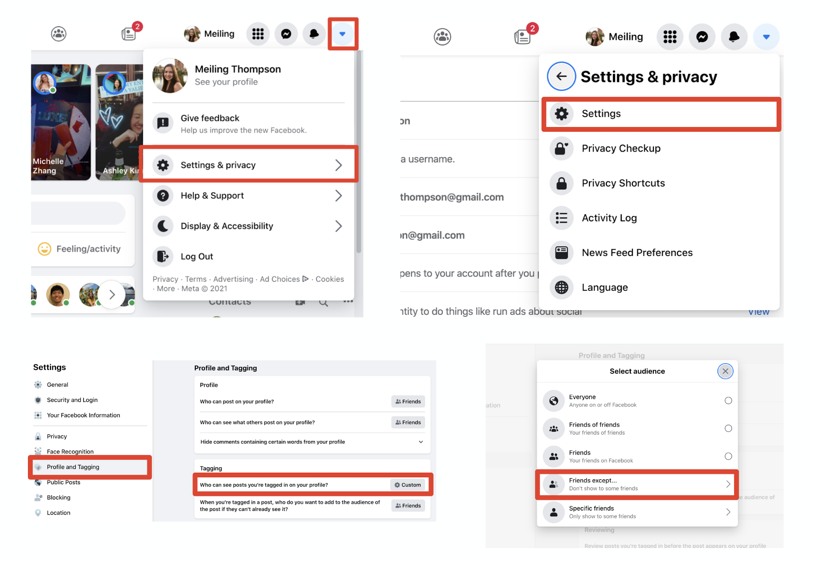
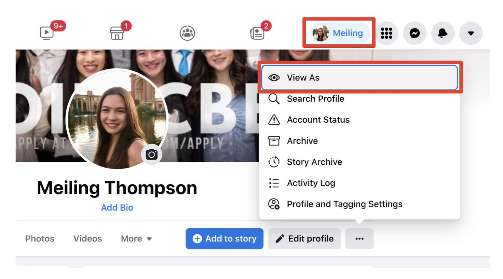
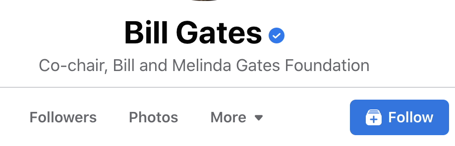
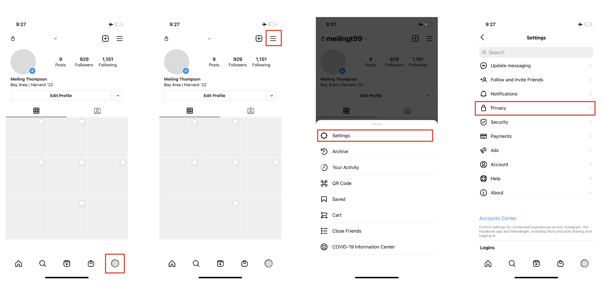
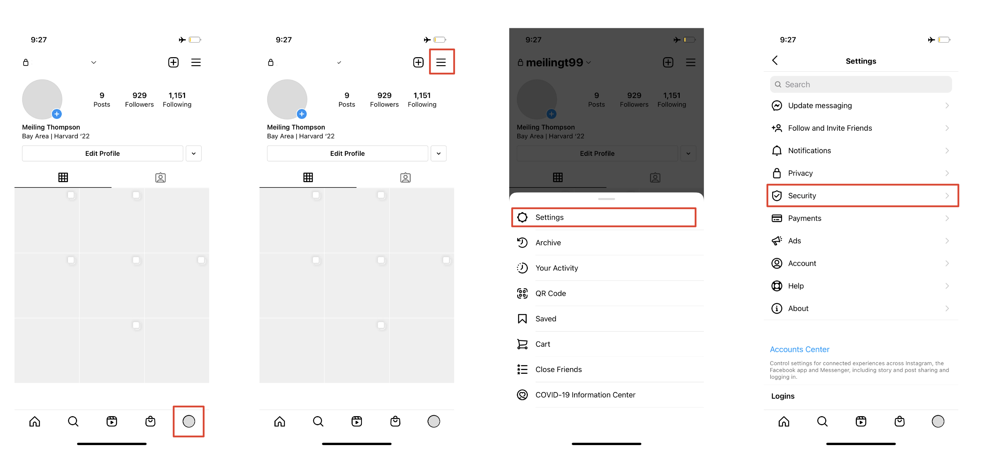

Social Media Privacy Guide
Facebook Privacy Settings: Highlights
Want to get a quick rundown of the data Facebook collects from you, see what your options are, and update your settings to your current preferences?
Upside down triangle in top right --> Settings & Privacy --> Privacy Checkup

Don't want your dad or grandma to see posts you're tagged in?
Upside down triangle in the top right --> Settings and Privacy --> Settings --> Profile nd Tagging --> Tagging --> Who can see posts you're tagged in on your profiles? --> Change dropdown to Friends Except...

Want to see what your profile looks like from someone else's account?
Go to your profile by clicking on your name and profile photo in the top right corner, then click the three horizontal dots directly underneath the bottom right corner of your cover photo, then click View As…

What is friending vs. following?
Friending: A two-way relation, typically for people you know in real life.
Following: A one-way relation in which the "follower" will see the public content of the "followee" in their feed, but the opposite is not true. Typically for people to see the content that public figures post.

Facebook Privacy Settings: Overview of all Privacy Settings
- Select your name and profile picture in the top right corner to navigate to your profile.
- Click on the About tab under your profile and cover photo to view your information, ranging from General Overview to Places Lived
- Click on the three horizontal dots next to each piece of information to edit and delete your information. You can also edit the public, friends only, select friends, etc. visibility of the information by clicking on the icon next to the three horizontal dots (default is Public).
- To edit your Settings & Privacy, click on the button with an upside down triangle at the top right corner of your Facebook dashboard.
Overview of all Settings & Privacy categories
- Security and Login: You can update settings such as updating your password to be a stronger password generated by last pass, and you can enable 2-factor authentication.
- Your Facebook Information: Manage how Facebook manages and distributes the data it collects on you.
- Privacy: Control who can view and message you and your activity on Facebook.
- Face Recognition: Facebook recently announced that they are no longer using facial recognition, so this page mostly serves to communicate that to users.
- Profile and Tagging: Control what people can see on your profile and who can see posts you're tagged in.
- Public Posts: Control what, if any, of your content is public
- Blocking: Add or remove people from your "Restricted List." You can also block apps and websites.
- Location History: Control if Facebook can view and use your location history.
- Ads: Control your ad preferences, see what advertisers and topics target you, and choose if you want to hide certain advertisers.
Instagram Privacy Settings
Instagram has fewer privacy settings than Facebook, partly becuase your settings on your linked Facebook account, such as your targeted ad preferneces, apply to both your Instagram and Facebook account.
Privacy
Switch to your profile tab, the last tab on the bottom tab selector --> Tap the three horizontal lines at the upper right corner --> Tap Settings --> Tap Privacy
Under Privacy, you can:
- Put settings into place under "Hidden Words" and "Limits" to prevent or stop you from being harassed
- Control who you can interact with you through tagging under "Posts."
- Hide your story from specific people under "Story."
- Restrict who can see your Activity Status (when you were last online) under 'Activity Status'

Security
Switch to your profile tab --> Tap the three horizontal lines at the upper right corner --> Tap Settings --> Tap Security
Under Security, you can:
- View your login activity.
- Enable two-factor authentication.
- Access and download the data that Instgram has collected on you.
- Clear your search history.

In order to control whether or not Instgram can access your location and photos, you must navigate into your phone's privacy settings, detailed here.